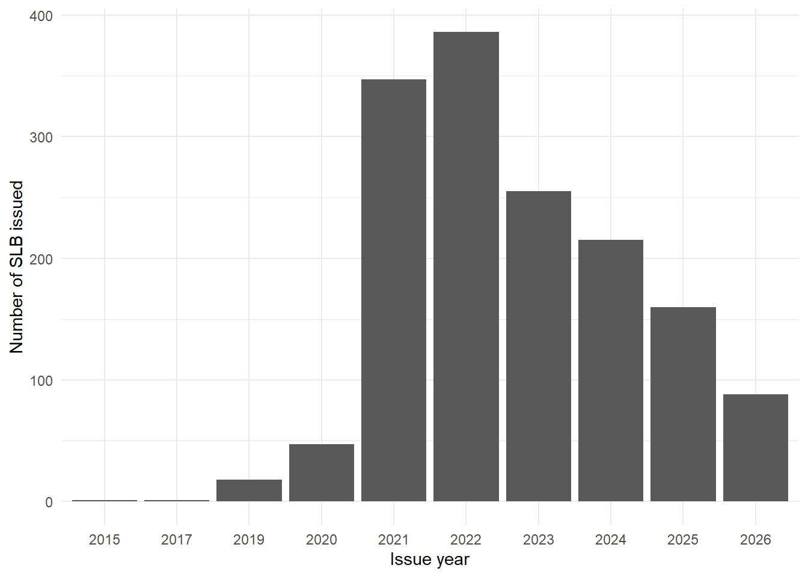
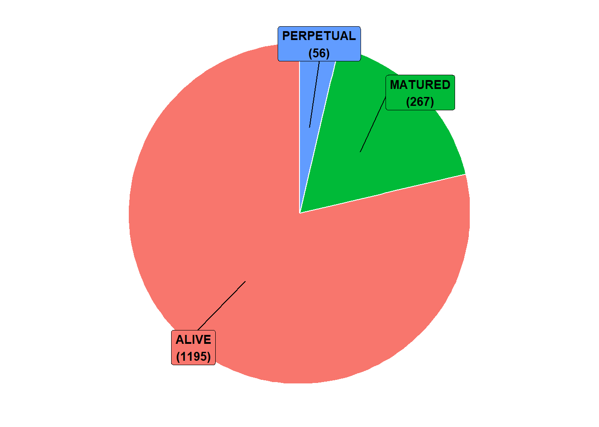
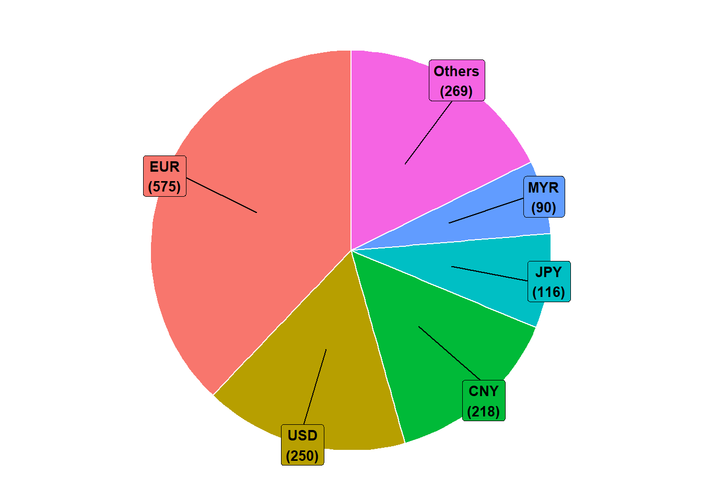
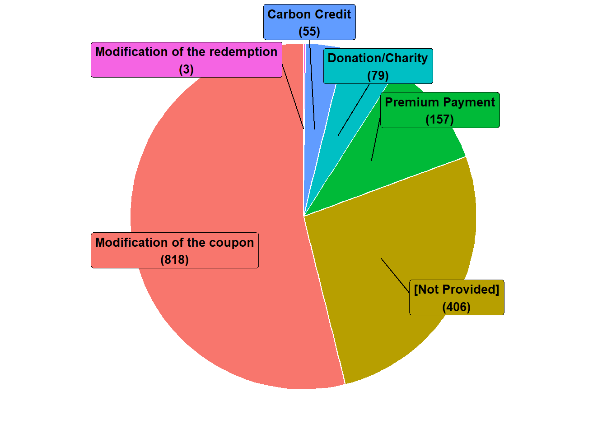

| cusip | cusip_id | issuer | ticker | issue_date | kpis | moody_init_rating | coupon | maturity | series | bbg_composite | mty_type | currency | desc_notes |
|---|---|---|---|---|---|---|---|---|---|---|---|---|---|
| EK8790637 | EK8790637 Corp | Ihsan Sukuk Bhd | KNBZMK | 2015-06-18 | Other | NA | 4.3 | 2022-06-17 | IMTN | NA | AT MATURITY | MYR | STEP-DOWN: PROPOSED 100BPS ON PRINCIPLE REPAYMENT. SPTS: INDIVIDUAL SCHOOL’S PERFORMANCE IN TERMS OF QUALITY OF EDUCATION PROVIDED. |
| AO3505242 | AO3505242 Corp | Ihsan Sukuk Bhd | KNBZMK | 2017-08-08 | Other | NA | 4.5999999999999996 | 2024-08-08 | IMTN | NA | AT MATURITY | MYR | INCLUDES RETAIL TRANCHE=MYR5MM.STEP-DOWN:40BPS.SPTS:(1)NO. OF SCHLS SCALED UP,(2)TEACHERS’ PROCIENCY,(3)ENABLING LEANRING ENV IN SCHLS,(4)STUDENT PROFICIENCY. |
| ZS6974621 | ZS6974621 Corp | Duerr AG | DUEGR | 2019-07-04 | ESG Score | NA | 0 | 2029-07-04 | 10Y | NA | AT MATURITY | EUR | PRICING STEPS UP BY 2BPS IF SUSTAINABILITY SCORE <=40. PRICING STEPS DOWN BY 2BPS IF >=62 |
| ZS6974936 | ZS6974936 Corp | Duerr AG | DUEGR | 2019-07-04 | ESG Score | NA | 0 | 2027-07-04 | 8YFX | NA | AT MATURITY | EUR | PRICING STEPS UP BY 2BPS IF SUSTAINABILITY SCORE <=40. PRICING STEPS DOWN BY 2BPS IF >=62 |
| ZS6974944 | ZS6974944 Corp | Duerr AG | DUEGR | 2019-07-04 | ESG Score | NA | 0 | 2025-07-04 | 6YFX | NA | AT MATURITY | EUR | PRICING STEPS UP BY 2BPS IF SUSTAINABILITY SCORE <=40. PRICING STEPS DOWN BY 2BPS IF >=62 |
| ZS6974969 | ZS6974969 Corp | Duerr AG | DUEGR | 2019-07-04 | ESG Score | NA | 0 | 2024-07-04 | 5YFX | NA | AT MATURITY | EUR | PRICING STEPS UP BY 2BPS IF SUSTAINABILITY SCORE <=40. PRICING STEPS DOWN BY 2BPS IF >=62 |
Fiche de statistiques descriptives des données sur les SLB
1 Introduction
Dans cette fiche de notes, nous décrivons la base de données collectée sur les SLBs (Sustainability Linked Bonds), dans le but d’orienter adéquatement la question de recherche du chapitre 2 de la thèse.
2 Bases de données
Les données ont été collectées via le terminal Bloomberg. Elles sont organisées en quatre bases de données:
- La base de données des obligations, qui comporte l’ensemble des caractéristiques génériques des SLBs en tant qu’obligations (identifiants, entité émettrice, date d’émission, taux de coupon, maturité, type de maturité, note Moody’s, note composite Bloomberg, devise dans laquelle est libellée l’obligation, une description courte sur les spécificités du contrat SLB).
- La base de données des caractéristiques SLB, qui comporte l’ensemble des caractéristiques particulières associées à des SLBs, pour les obligations collectées. En l’état, ces caractéristiques sont nombreuses. Toutefois, les plus importantes à relever sont:
- le respect du processus de sélection des KPI établi par l’ICMA (
selection_of_kpi); - le mécanisme de déclenchement des pénalités ou des récompenses selon les KPI (
kpi_association); - l’alignement du SLB avec les principes de l’ICMA (
icma_principles_alignd_indicator); - le type de pénalité ou de récompense en cas d’échec (
bond_modification_mechanism); - le type de KPIs sur lesquels le SLB est construit (
sustainability_linked_metrc_scre).
- le respect du processus de sélection des KPI établi par l’ICMA (
- La base de données des KPI associés aux SLB, qui comporte l’ensemble des indicateurs clés de performance sur lesquels les SLBs sont construit. Pour chaque KPI, nous avons:
- L’identifiant du SLB associé;
- Le thème associé au SLB et une description;
- La mesure (en pts de base) de la pénalité ou de la récompense en cas de non atteinte ou d’atteinte de l’objectif fixé pour le KPI;
- La valeur de référence de l’indicateur sur laquelle l’objectif fixé en % est calculé;
- La valeur cible de l’objectif (Sustainability performance target) et la date à laquelle la cible doit être atteinte (date d’observation);
- La valeur observée de l’indicateur à la date d’observation;
- Une indicatrice (Vrai ou Faux) d’objectif atteint (calculé sur la base de la valeur cible et de la valeur observée du KPI)
- La base de données des prix des obligations, qui comporte l’ensemble des prix de clôture annuels des SLB collectés, entre janvier 2020 et septembre 2026.
3 Chargement des données
Nous commençons par charger les données sur les caractéristiques générales des obligations.
Nous chargeons ensuite les données sur les caractéristiques SLB
| cusip_id | selection_of_kpi | kpi_association | icma_principles_alignd_indicator | bond_modification_mechanism | sustainability_linked_metrc_scre |
|---|---|---|---|---|---|
| EK8790637 Corp | FALSE | Combined | FALSE | Modification of the coupon | ESG Metric |
| AO3505242 Corp | FALSE | Combined | FALSE | Modification of the coupon | ESG Metric |
| ZS6974621 Corp | NA | NA | FALSE | NA | ESG Score |
| ZS6974936 Corp | NA | NA | FALSE | NA | ESG Score |
| ZS6974944 Corp | NA | NA | FALSE | NA | ESG Score |
| ZS6974969 Corp | TRUE | NA | TRUE | NA | ESG Score |
Puis, nous chargeons les données sur les KPIs des SLBs.
| cusip_id | bp_increase | bp_decrease | baseline_value | baseline_unit | baseline_date | spt_value | spt_unit | observation_date | spt_observed_val | spt_observed_unit | spt_achieved | coupon_step_effective_dt | coupon_step_payment_dt | certification_dt | sustainability_lnk_rpt_item | benchmark_approach | kpi_theme | spt_description |
|---|---|---|---|---|---|---|---|---|---|---|---|---|---|---|---|---|---|---|
| EK8790637 Corp | NA | 100 | NA | NA | NA | 20 | facilities | NA | NA | NA | NA | 2022-06-17 | 2022-06-17 | NA | 1 | NA | Other | Other |
| EK8790637 Corp | NA | 100 | NA | NA | NA | 50 | % | NA | NA | NA | NA | 2022-06-17 | 2022-06-17 | NA | 1 | NA | Other | Other |
| EK8790637 Corp | NA | 100 | NA | NA | NA | 50 | % | NA | NA | NA | NA | 2022-06-17 | 2022-06-17 | NA | 2 | NA | Other | Other |
| EK8790637 Corp | NA | 100 | NA | NA | NA | 50 | % | NA | NA | NA | NA | 2022-06-17 | 2022-06-17 | NA | 3 | NA | Other | Other |
| AO3505242 Corp | NA | 40 | NA | NA | NA | 20 | facilities | NA | NA | NA | NA | 2023-08-08 | 2024-08-08 | NA | 1 | NA | Other | Other |
| AO3505242 Corp | NA | 40 | NA | NA | NA | 50 | % | NA | NA | NA | NA | 2023-08-08 | 2024-08-08 | NA | 1 | NA | Other | Other |
Enfin, nous chargeons les données sur les prix des SLBs.
| date | cusip_id | price |
|---|---|---|
| 2020-01-31 | BN9953165 CORP | NA |
| 2020-01-31 | BO0411690 CORP | NA |
| 2020-01-31 | BO0866331 CORP | NA |
| 2020-01-31 | BN4942759 CORP | NA |
| 2020-01-31 | BN4943351 CORP | NA |
| 2020-01-31 | BN4943443 CORP | NA |
4 Statistiques descriptives
4.1 Caractéristiques des SLBs
Nous agrégeons les données sur les caractéristiques générales et les caractéristiques SLB, et nous ressortons:
- La distribution des années d’émissions des obligations;
- La répartition des obligations échues vs non échues vs perpétuelles à date du 01er octobre 2026;
- La répartition des devises en lesquelles sont libellées les obligations;
- La répartition des types de pénalités/récompenses associés aux obligations.




4.2 Statistiques sur les KPIs des SLBs
Nous commençons par ressortir la proportion des SLBs dont les dates d’observation de tous les KPIs sont antérieures au 01er octobre 2026.
| Observation date in future | Observation date passed | Observation date not provided |
|---|---|---|
| 606 | 480 | 432 |
Seuls 480 titres de dette disposent d’indicateurs de performance (KPIs) déjà observables (et observées en principe) à date du 01er octobre.
Pour la suite, nous excluons les SLBs dont les dates d’observation se situent après le 01er octobre 2026 ou sont non fournies. Nous ressortons ensuite la proportion des SLBs dont les informations concernant l’atteinte de l’objectif SPT pour tous les KPIs sont disponibles.
| SPT achievements for all KPI are known | SPT achievements for some or all KPI are not known |
|---|---|
| 353 | 127 |
Pour 353 SLBs parmi ceux dont les dates d’observation des KPI sont passées, les informations concernant l’atteinte de l’objectif SPT pour tous les KPIs sont disponibles. Par contre, pour 127 SLBs, les informations concernant l’atteinte de l’objectif SPT pour tout ou partie des KPIs ne sont pas disponibles.
Pour la suite, nous excluons les SLBs dont une partie des informations concernant l’atteinte de l’objectif SPT n’est pas disponible. Nous ressortons de l’ensemble des SLBs filtré la proportion des SLBs dont:
- Le mécanisme de pénalité/récompense est la modification du coupon ou le paiement d’un premium sur la valeur faciale à l’échéance;
- Les valeurs de récompense/pénalités (en points de base) sont fournies, et les dates de modification (application des récompenses/pénalités) sont fournies.
| Coupon is modified or premium is paid | Other penalty/reward mechanism | |
|---|---|---|
| Step up/step down data (values and eff dates) are provided | 298 | 0 |
| Step up/step down data (values and eff dates) are not provided | 41 | 14 |
Sur les 353 SLBs obtenus précédemment, seuls 298 disposent d’un mécanisme de récompenses/pénalité affectant les cash-flow de l’obligation et d’informations suffisamment fournis sur les récompenses et les pénalités en cas de non atteinte des SPTs.
Pour la suite, nous excluons les 45 autres SLBs. Enfin, nous ressortons la proportion des SLBs libellées en dollars US ou euros EUR, et disposant d’un historique de prix.
| Currency is USD or EUR | Currency is not USD nor EUR | |
|---|---|---|
| Price history is provided | 156 | 111 |
| Price history is not provided | 10 | 21 |
Sur les 298 SLBs précédents, seuls 156 sont libellés en USD ou en EUR, et disposent d’un historique de prix.
Nous excluons les 142 autres SLBs.
4.3 Construction finale des bases de données
Nous construisons les bases de données finales uniquement sur la base des 156 SLBs ayant passé tous les filtres précédents.
Base de données finale des caractéristiques SLBs
| cusip | cusip_id | issuer | ticker | issue_date | kpis | moody_init_rating | coupon | maturity | series | bbg_composite | mty_type | currency | desc_notes | selection_of_kpi | kpi_association | icma_principles_alignd_indicator | bond_modification_mechanism | sustainability_linked_metrc_scre |
|---|---|---|---|---|---|---|---|---|---|---|---|---|---|---|---|---|---|---|
| BO0866331 | BO0866331 Corp | H&M Finance BV | HMBSS | 2021-02-25 | Raw Material Sourcing & Recycling (Circular Economy) Climate Change (GHG Emissions & Energy) | NA | 0.25 | 2029-08-25 | EMTN | NR | CALLABLE | EUR | STEP-UP MARGIN: AUG 2026 MAX 25BP, STEP-UP EVENT: REF YEAR 2025 RECYCLED MATERIALS PERCENTAGE | TRUE | Per KPI | TRUE | Modification of the coupon | ESG Metric |
| BO5182908 | BO5182908 Corp | Koninklijke Ahold Delhaize NV | ADNA | 2021-03-18 | Climate Change (GHG Emissions & Energy) Waste | Baa1 | 0.375 | 2030-03-18 | #N/A Field Not Applicable | BBB+ | CALLABLE | EUR | STEP-UP MARGIN: 25 BP FROM MARCH 2026, STEP-UP EVENT: CARBON EMISSION REDUCTION - CO2 EMISSION REDUCTION - FOOD WASTE REDUCTION | TRUE | Combined | TRUE | Modification of the coupon | ESG Metric |
| BO4570236 | BO4570236 Corp | Public Power Corp SA | PPCGA | 2021-03-18 | Climate Change (GHG Emissions & Energy) | NA | 4.375 | 2026-03-30 | #N/A Field Not Applicable | NR | CALLABLE | EUR | STEP-UP MARGIN: 50BP, STEP-UP EVENT: FAILURE TO REDUCE ISSUER’S CO2 EMISSIONS BY 40% BY DEC-22, FROM 2019 BASE YEAR. TARGET MISSED. PENALTY EFFECTIVE: 10/02/23. | TRUE | Per KPI | TRUE | Modification of the coupon | ESG Metric |
| BO6047878 | BO6047878 Corp | Japfa Comfeed Indonesia Tbk PT | JPFAIJ | 2021-03-23 | Water (incl. Ocean) | NA | 5.375 | 2026-03-23 | #N/A Field Not Applicable | NR | CALLABLE | USD | STEP-UP MARGIN:25BP, STEP-UP EVENT:FAILURE TO SATISFY SPT ON 3MTHS PRIOR TO YR4. OR, FAIL OR INABILITY TO DELIVER THE SATISFACTION CERTIFICATE TO TRUSTEE. | TRUE | Combined | TRUE | Modification of the coupon | ESG Metric |
| BO7234723 | BO7234723 Corp | Public Power Corp SA | PPCGA | 2021-03-24 | Climate Change (GHG Emissions & Energy) | NA | 3.875 | 2026-03-30 | MAR | NA | CALLABLE | EUR | FUNGED WITH SECURITY XS2314265237 ON OR AROUND 05/03/2021. | TRUE | Per KPI | TRUE | Modification of the coupon | ESG Metric |
| 83419MAA0 | 83419MAA0 Corp | Aris Water Holdings LLC | ARIS | 2021-04-01 | Water (incl. Ocean) | B3 | 7.625 | 2026-04-01 | 144A | NR | CALLABLE | USD | STEP-UP MARGIN: 25BP, STEP-UP EVENT: APRIL 2025, 85% OF ALL BARRELS OF WATER SOLD WILL BE BARRELS OF RECYCLED PRODUCED WATER. | TRUE | Per KPI | TRUE | Modification of the coupon | ESG Metric |
Base de données finale des KPIs
| cusip_id | bp_increase | bp_decrease | baseline_value | baseline_unit | baseline_date | spt_value | spt_unit | observation_date | spt_observed_val | spt_observed_unit | spt_achieved | coupon_step_effective_dt | coupon_step_payment_dt | certification_dt | sustainability_lnk_rpt_item | benchmark_approach | kpi_theme | spt_description |
|---|---|---|---|---|---|---|---|---|---|---|---|---|---|---|---|---|---|---|
| BO0866331 Corp | 10 | NA | NA | NA | NA | 30 | % | 2025-12-31 | 32.00 | % | TRUE | 2026-08-25 | 2027-08-25 | NA | 1 | NA | Raw Material Sourcing & Recycling (Circular Economy) | Sustainable/recyclable raw materials used in production |
| BO0866331 Corp | 5 | NA | 63690.00 | tons of CO2e | 2017-12-31 | -20 | % change | 2025-12-31 | -33.79 | % change | TRUE | 2026-08-25 | 2027-08-25 | NA | 1 | NA | Climate Change (GHG Emissions & Energy) | Scope 1 & 2 (market based) GHG emissions (absolute) |
| BO0866331 Corp | 10 | NA | 13479100.00 | tons of CO2e | 2017-12-31 | -10 | % change | 2025-12-31 | -63.91 | % change | TRUE | 2026-08-25 | 2027-08-25 | NA | 1 | NA | Climate Change (GHG Emissions & Energy) | Scope 3 GHG emissions (absolute) |
| BO5182908 Corp | 25 | NA | 3658.00 | kilotonnes CO2e | 2018-12-31 | -29 | % change | 2025-12-28 | 39.00 | % change | TRUE | 2026-03-18 | 2027-03-18 | NA | 1 | Science based - SBTi | Climate Change (GHG Emissions & Energy) | Scope 1 & 2 GHG emissions (absolute) |
| BO5182908 Corp | 25 | NA | 5.48 | tonnes / million EUR | 2016-12-31 | -32 | % change / million EUR | 2025-12-28 | 39.10 | % change | TRUE | 2026-03-18 | 2027-03-18 | NA | 1 | NA | Waste | Food waste |
| BO4570236 Corp | 50 | NA | 23150000.00 | tonnes of CO2e | 2019-12-31 | -40 | % change | 2022-12-31 | -36.00 | % change | FALSE | 2023-03-30 | 2024-03-30 | NA | 1 | NA | Climate Change (GHG Emissions & Energy) | Scope 1 GHG emissions (absolute) |
Base de données finale des prix
| cusip_cid | cusip_id | date | price |
|---|---|---|---|
| 00775CAB2 CORP | 00775CAB2 Corp | 2020-01-31 | NA |
| 00775CAB2 CORP | 00775CAB2 Corp | 2020-01-31 | NA |
| 00775CAB2 CORP | 00775CAB2 Corp | 2020-01-31 | NA |
| 00775CAB2 CORP | 00775CAB2 Corp | 2020-02-28 | NA |
| 00775CAB2 CORP | 00775CAB2 Corp | 2020-02-28 | NA |
| 00775CAB2 CORP | 00775CAB2 Corp | 2020-02-28 | NA |